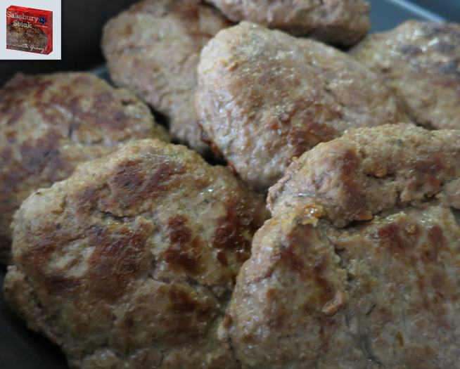

Salisbury Steak

Description
Salisbury steak is a dish made from a blend of minced beef and other ingredients, shaped to resemble a steak, usually served with gravy or brown sauce. It was invented by an American physician, Dr. J. H. Salisbury (1823-1905), whose name has been used since 1897 to describe this particular food item.
It's a good meal but definitely do not follow the creator's recommended diet!
Ingredients
For Patties:
- 1 lb. Ground Beef
- ½ tsp Thyme
- ½ tsp Pepper
- ¼ cup Bread Crumbs
- 2 tsp Worcestershire Sauce
- 1 Egg
For Gravy:
- 6-8 Mushrooms
- ½ Large Onion
- 13 oz. Beef Broth
Steps
- Place the ground beef and all the other ingredients for the patties in the bowl. Mix until everything is finely combined.
- Split the meat into five sections and create the patties.
- Slice the mushrooms and onions for the gravy. Make sure to keep the slices relatively thin.
- Place a frying pan over medium-high heat and add olive oil in the pan. Place the patties and allow them to cook. Flip them when the bottoms have browned (about 4-5 minutes). Allow the other side to cook (about 3-5 minutes). Once they are cooked remove the patties from the pan, leave the heat on, into a baking dish. At this point pre-heat your oven to 375°F.
- In the same frying pan if there isn't much oil left over add about a tablespoon. Add the mushrooms and onions.
- Sauté for about 5 minutes or until the onions are beginning to become translucent. Add the beef broth and cover it.
- Cook until the broth begins to thicken, about 10 minutes. Place the gravy in the baking dish with the meat. Place in the oven and cook for 15 minutes. Serve with some egg noodles and a green vegetable of your choice for that all American classic dinner.
Source: Pixelated Provisions: Salisbury Steak